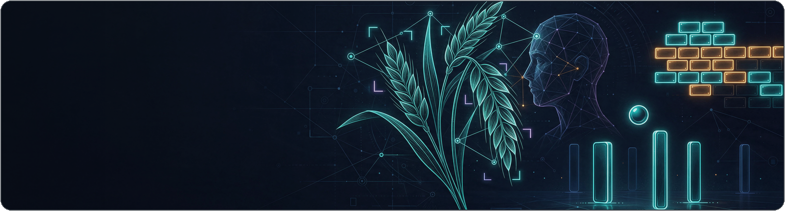

Developer · Research-minded builder
Ideas made useful
Web tools, graph experiments and machine-learning projects—with a focus on clear, practical outcomes
Explore selected repositories
Developer · Research-minded builder
Web tools, graph experiments and machine-learning projects—with a focus on clear, practical outcomes
Explore selected repositories